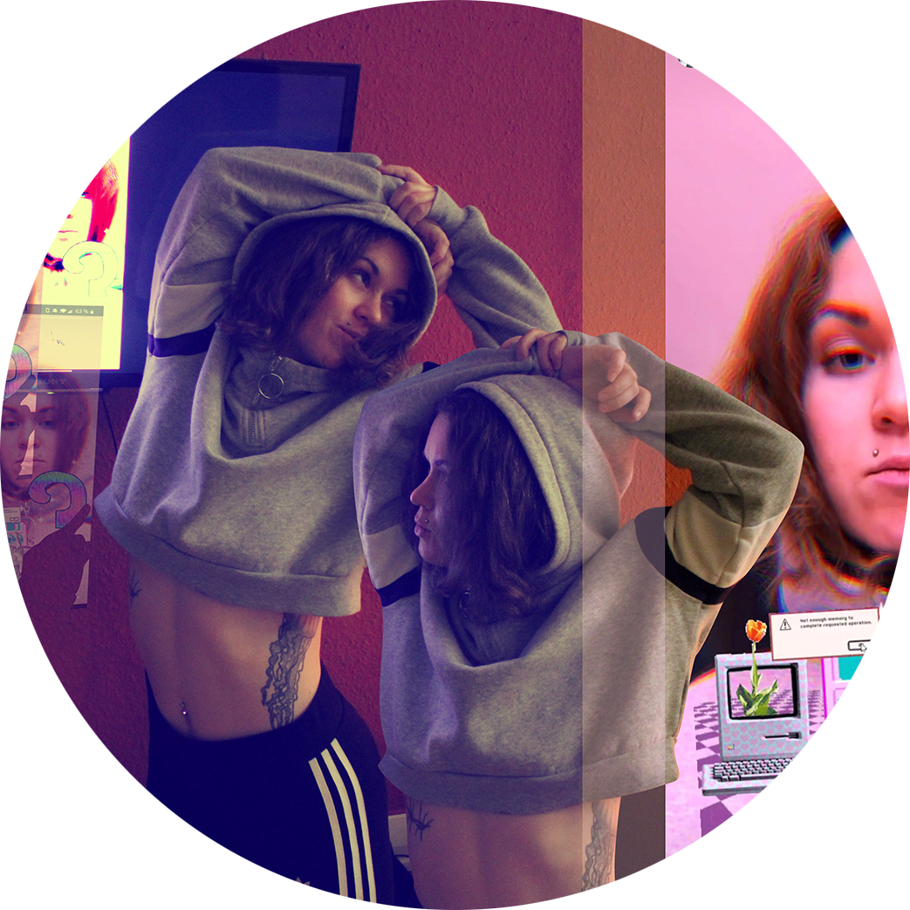

Om mig

Nicolina Nordal Petersen
En 27 år ung uddannet Mediegrafiker, som har haft nogle år til at afprøve om der skulle ske noget andet. Årene er blandt andet blevet brugt på at tage grundforløbet på Snedkeruddannelsen, lære arabisk og prøve at lære at gå i split - som aldrig har lykkedes. Jeg er dog vendt hjem til det grafiske univers igen.